library("bayesplot")
library("ggtext")
library("rstan")
library("tidyverse")
knitr::opts_chunk$set(echo = TRUE)
# tips_df <- readr::read_csv("tips.csv")Multivariate Data
Setting: NOAA
I will be studying weather data for a semester theme. The main data will probably come from NOAA (National Oceanic and Atmospheric Administration), where the data consists of several readings (variables) from several research stations over many years.
Let \(\theta\) represent the high temperature recorded. Across \(k\) research stations,
\[\vec{\theta} = (\theta_{1}, \theta_{2}, ..., \theta_{k})\]
Bayesian Approach
If we have a vector of parameters to estimate,
\[f(\vec{\theta} | \vec{y} ) \propto \text{prior}*\text{likelihood} = f(\vec{\theta}) \cdot L(\vec{\theta} | \vec{y})\]
Normalizing Constant
\[f(y) = \displaystyle\int_{\theta_{1}}\int_{\theta_{2}} \cdots \int_{\theta_{k}} \! f(\vec{\theta}) \cdot L(\vec{\theta} | \vec{y} ) \, d\theta_{k} \cdots d\theta_{2} \, d\theta_{1}\]
- closed form solution probably does not exist
- very expensive computationally
Strategy
Approximate the posterior distribution via simulation
- grid approximation, or
- MCMC (Monte Carlo Markov Chains)
Both produce a sample of \(N\) \(\theta\) values
\[\{ \theta^{(1)}, \theta^{(2)}, ..., \theta^{(N)} \}\]
that may have similar statistics to the posterior distribution of \(\theta\).
Conjugate Priors
For today, we will revisit the conjugate priors where we know a lot about the posterior distributions.
- Beta-Binomial
\[\begin{array}{rrcl} \text{prior: } & \pi & \sim & \text{Beta}(\alpha, \beta) \\ \text{likelihood: } & Y|\pi & \sim & \text{Bin}(n, \pi) \\ \text{posterior: } & \pi|Y & \sim & \text{Beta}(\alpha + y, \beta + n - y) \\ \end{array}\]
- Gamma-Poisson
\[\begin{array}{rrcl} \text{prior: } & \pi & \sim & \text{Gamma}(s, r) \\ \text{likelihood: } & Y|\pi & \sim & \text{Pois}(\lambda) \\ \text{posterior: } & \pi|Y & \sim & \text{Gamma}\left(s + \displaystyle\sum_{i=1}^{n} y, r + n\right) \\ \end{array}\]
Grid Approximation
Broad Idea
As we gather pieces, the overall picture might become clear.

- image source: National Museum of Australia
Math Definitions
Grid approximation produces a sample of \(N\) independent \(\theta\) values, \(\{\theta^(1),\theta^(2),…,\theta^(N)\}\), from a discretized approximation of posterior pdf \(f(\theta|y)\). This algorithm evolves in four steps:
Define a discrete grid of possible \(\theta\) values.
Evaluate the prior pdf \(f(\theta)\) and likelihood function \(L(\theta|y)\) at each \(\theta\) grid value.
Obtain a discrete approximation of the posterior pdf \(f(\theta|y)\) by:
- calculating the product \(f(\theta)L(\theta|y)\) at each \(\theta\) grid value; and then
- normalizing the products so that they sum to 1 across all \(\theta\).
Randomly sample \(N\) \(\theta\) grid values with respect to their corresponding normalized posterior probabilities.
Example: Beta-Binomial
Scenario: Smokers in Restaurants
Let us start with a vague beta prior, use a binomial model to get the likelihood of \(y = 4\) smokers among \(n = 9\) customers, and then get a beta posterior.
\[\begin{array}{rrcl} \text{prior: } & \pi & \sim & \text{Beta}(3, 3) \\ \text{likelihood: } & Y|\pi & \sim & \text{Bin}(9, \pi) \\ \text{posterior: } & \pi|Y & \sim & \text{Beta}(7, 8) \\ \end{array}\]
Sparse Grid
Here we will try this grid approximation idea over \(N = 5\) values
\[\pi \in \{0, 0.25, 0.50, 0.75, 1.0\}\]
# Step 1: Define a grid of 6 pi values
grid_data <- data.frame(pi_grid = seq(from = 0, to = 1,
length = 5))
# Step 2: Evaluate the prior & likelihood at each pi
grid_data <- grid_data %>%
mutate(prior = dbeta(pi_grid, 3, 3),
likelihood = dbinom(4, 9, pi_grid))
# Step 3: Approximate the posterior
grid_data <- grid_data %>%
mutate(unnormalized = likelihood * prior,
posterior = unnormalized / sum(unnormalized))round(grid_data, 4) pi_grid prior likelihood unnormalized posterior
1 0.00 0.0000 0.0000 0.0000 0.0000
2 0.25 1.0547 0.1168 0.1232 0.1969
3 0.50 1.8750 0.2461 0.4614 0.7375
4 0.75 1.0547 0.0389 0.0411 0.0656
5 1.00 0.0000 0.0000 0.0000 0.0000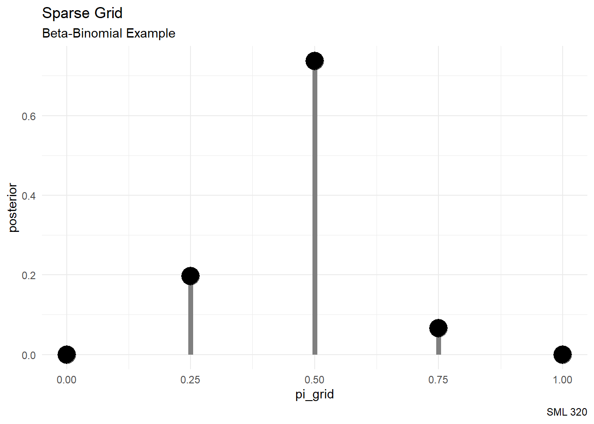
# Plot the grid approximated posterior
ggplot(grid_data, aes(x = pi_grid, y = posterior)) +
geom_segment(aes(x = pi_grid, xend = pi_grid, y = 0, yend = posterior),
color = "gray50",
linewidth = 2) +
geom_point(size = 7) +
labs(title = "Sparse Grid",
subtitle = "Beta-Binomial Example",
caption = "SML 320") +
theme_minimal()# Step 4: sample from the discretized posterior
posterior_sample <- sample_n(grid_data,
size = 10000,
weight = posterior,
replace = TRUE)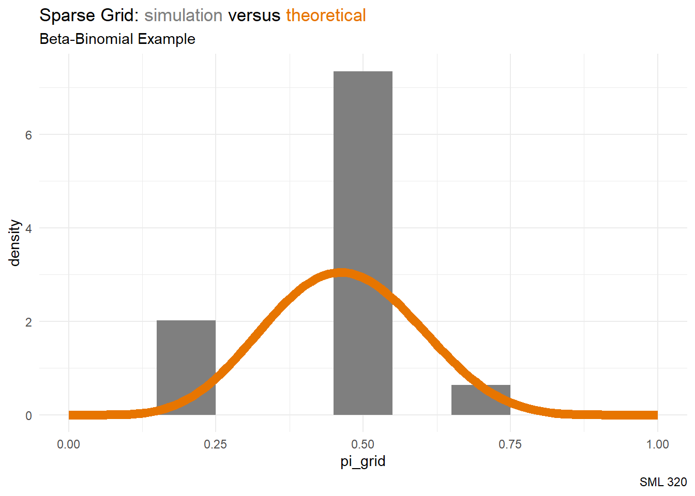
ggplot(posterior_sample, aes(x = pi_grid)) +
geom_histogram(aes(y = after_stat(density)),
binwidth = 0.1,
fill = "gray50") +
stat_function(fun = dbeta, args = list(7, 8),
color = "#E77500", linewidth = 3) +
lims(x = c(0, 1)) +
labs(title = "Sparse Grid: <span style='color:#7F7F7F'>simulation</span> versus <span style='color:#E77500'>theoretical</span>",
subtitle = "Beta-Binomial Example",
caption = "SML 320") +
theme_minimal() +
theme(plot.title = element_markdown())Dense Grid
Here we will try this grid approximation idea over \(N = 101\) values
\[\pi \in [0,1]\]
# Step 1: Define a grid of 6 pi values
grid_data <- data.frame(pi_grid = seq(from = 0, to = 1,
length = 101))
# Step 2: Evaluate the prior & likelihood at each pi
grid_data <- grid_data %>%
mutate(prior = dbeta(pi_grid, 3, 3),
likelihood = dbinom(4, 9, pi_grid))
# Step 3: Approximate the posterior
grid_data <- grid_data %>%
mutate(unnormalized = likelihood * prior,
posterior = unnormalized / sum(unnormalized))round(grid_data, 4) pi_grid prior likelihood unnormalized posterior
1 0.00 0.0000 0.0000 0.0000 0.0000
2 0.01 0.0029 0.0000 0.0000 0.0000
3 0.02 0.0115 0.0000 0.0000 0.0000
4 0.03 0.0254 0.0001 0.0000 0.0000
5 0.04 0.0442 0.0003 0.0000 0.0000
6 0.05 0.0677 0.0006 0.0000 0.0000
7 0.06 0.0954 0.0012 0.0001 0.0000
8 0.07 0.1271 0.0021 0.0003 0.0000
9 0.08 0.1625 0.0034 0.0006 0.0000
10 0.09 0.2012 0.0052 0.0010 0.0001
11 0.10 0.2430 0.0074 0.0018 0.0001
12 0.11 0.2875 0.0103 0.0030 0.0002
13 0.12 0.3345 0.0138 0.0046 0.0003
14 0.13 0.3837 0.0179 0.0069 0.0004
15 0.14 0.4349 0.0228 0.0099 0.0006
16 0.15 0.4877 0.0283 0.0138 0.0009
17 0.16 0.5419 0.0345 0.0187 0.0012
18 0.17 0.5973 0.0415 0.0248 0.0016
19 0.18 0.6536 0.0490 0.0320 0.0020
20 0.19 0.7106 0.0573 0.0407 0.0026
21 0.20 0.7680 0.0661 0.0507 0.0032
22 0.21 0.8257 0.0754 0.0623 0.0040
23 0.22 0.8834 0.0852 0.0753 0.0048
24 0.23 0.9409 0.0954 0.0898 0.0057
25 0.24 0.9981 0.1060 0.1058 0.0067
26 0.25 1.0547 0.1168 0.1232 0.0078
27 0.26 1.1105 0.1278 0.1419 0.0090
28 0.27 1.1655 0.1388 0.1618 0.0103
29 0.28 1.2193 0.1499 0.1827 0.0116
30 0.29 1.2718 0.1608 0.2045 0.0130
31 0.30 1.3230 0.1715 0.2269 0.0144
32 0.31 1.3726 0.1820 0.2498 0.0159
33 0.32 1.4205 0.1921 0.2729 0.0173
34 0.33 1.4666 0.2017 0.2959 0.0188
35 0.34 1.5107 0.2109 0.3185 0.0202
36 0.35 1.5527 0.2194 0.3406 0.0216
37 0.36 1.5925 0.2272 0.3619 0.0230
38 0.37 1.6301 0.2344 0.3820 0.0243
39 0.38 1.6652 0.2407 0.4008 0.0255
40 0.39 1.6979 0.2462 0.4180 0.0266
41 0.40 1.7280 0.2508 0.4334 0.0275
42 0.41 1.7555 0.2545 0.4468 0.0284
43 0.42 1.7802 0.2573 0.4581 0.0291
44 0.43 1.8022 0.2592 0.4671 0.0297
45 0.44 1.8214 0.2601 0.4737 0.0301
46 0.45 1.8377 0.2600 0.4779 0.0304
47 0.46 1.8511 0.2590 0.4795 0.0305
48 0.47 1.8615 0.2571 0.4786 0.0304
49 0.48 1.8690 0.2543 0.4753 0.0302
50 0.49 1.8735 0.2506 0.4695 0.0298
51 0.50 1.8750 0.2461 0.4614 0.0293
52 0.51 1.8735 0.2408 0.4511 0.0287
53 0.52 1.8690 0.2347 0.4387 0.0279
54 0.53 1.8615 0.2280 0.4245 0.0270
55 0.54 1.8511 0.2207 0.4085 0.0260
56 0.55 1.8377 0.2128 0.3910 0.0248
57 0.56 1.8214 0.2044 0.3722 0.0237
58 0.57 1.8022 0.1955 0.3524 0.0224
59 0.58 1.7802 0.1863 0.3317 0.0211
60 0.59 1.7555 0.1769 0.3105 0.0197
61 0.60 1.7280 0.1672 0.2889 0.0184
62 0.61 1.6979 0.1574 0.2673 0.0170
63 0.62 1.6652 0.1475 0.2457 0.0156
64 0.63 1.6301 0.1376 0.2244 0.0143
65 0.64 1.5925 0.1278 0.2036 0.0129
66 0.65 1.5527 0.1181 0.1834 0.0117
67 0.66 1.5107 0.1086 0.1641 0.0104
68 0.67 1.4666 0.0994 0.1457 0.0093
69 0.68 1.4205 0.0904 0.1284 0.0082
70 0.69 1.3726 0.0818 0.1122 0.0071
71 0.70 1.3230 0.0735 0.0973 0.0062
72 0.71 1.2718 0.0657 0.0835 0.0053
73 0.72 1.2193 0.0583 0.0711 0.0045
74 0.73 1.1655 0.0513 0.0598 0.0038
75 0.74 1.1105 0.0449 0.0499 0.0032
76 0.75 1.0547 0.0389 0.0411 0.0026
77 0.76 0.9981 0.0335 0.0334 0.0021
78 0.77 0.9409 0.0285 0.0268 0.0017
79 0.78 0.8834 0.0240 0.0212 0.0013
80 0.79 0.8257 0.0200 0.0165 0.0011
81 0.80 0.7680 0.0165 0.0127 0.0008
82 0.81 0.7106 0.0134 0.0095 0.0006
83 0.82 0.6536 0.0108 0.0070 0.0004
84 0.83 0.5973 0.0085 0.0051 0.0003
85 0.84 0.5419 0.0066 0.0036 0.0002
86 0.85 0.4877 0.0050 0.0024 0.0002
87 0.86 0.4349 0.0037 0.0016 0.0001
88 0.87 0.3837 0.0027 0.0010 0.0001
89 0.88 0.3345 0.0019 0.0006 0.0000
90 0.89 0.2875 0.0013 0.0004 0.0000
91 0.90 0.2430 0.0008 0.0002 0.0000
92 0.91 0.2012 0.0005 0.0001 0.0000
93 0.92 0.1625 0.0003 0.0000 0.0000
94 0.93 0.1271 0.0002 0.0000 0.0000
95 0.94 0.0954 0.0001 0.0000 0.0000
96 0.95 0.0677 0.0000 0.0000 0.0000
97 0.96 0.0442 0.0000 0.0000 0.0000
98 0.97 0.0254 0.0000 0.0000 0.0000
99 0.98 0.0115 0.0000 0.0000 0.0000
100 0.99 0.0029 0.0000 0.0000 0.0000
101 1.00 0.0000 0.0000 0.0000 0.0000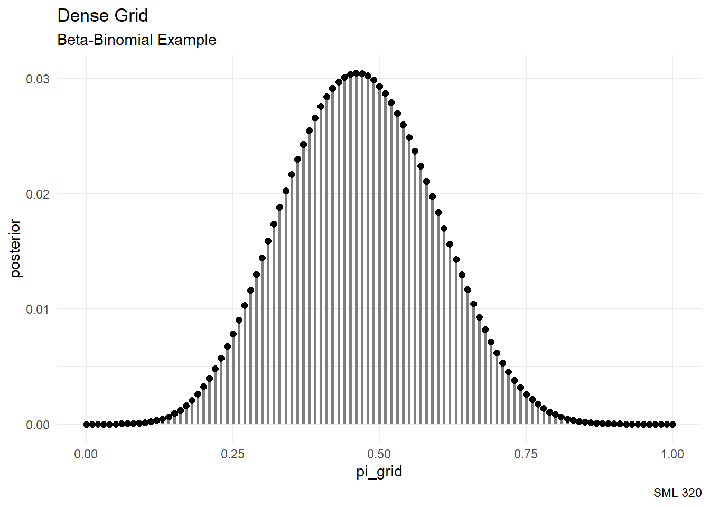
# Plot the grid approximated posterior
ggplot(grid_data, aes(x = pi_grid, y = posterior)) +
geom_segment(aes(x = pi_grid, xend = pi_grid, y = 0, yend = posterior),
color = "gray50",
linewidth = 1) +
geom_point(size = 2) +
labs(title = "Dense Grid",
subtitle = "Beta-Binomial Example",
caption = "SML 320") +
theme_minimal()# Step 4: sample from the discretized posterior
posterior_sample <- sample_n(grid_data,
size = 10000,
weight = posterior,
replace = TRUE)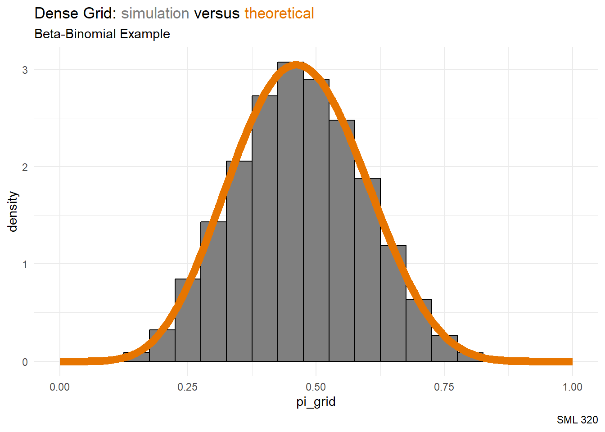
ggplot(posterior_sample, aes(x = pi_grid)) +
geom_histogram(aes(y = after_stat(density)),
color = "black",
binwidth = 0.05,
fill = "gray50") +
stat_function(fun = dbeta, args = list(7, 8),
color = "#E77500", linewidth = 3) +
lims(x = c(0, 1)) +
labs(title = "Dense Grid: <span style='color:#7F7F7F'>simulation</span> versus <span style='color:#E77500'>theoretical</span>",
subtitle = "Beta-Binomial Example",
caption = "SML 320") +
theme_minimal() +
theme(plot.title = element_markdown())Example: Gamma-Poisson
Scenario: Drug Law Violations
Let us start with a vague Gamma prior, use a binomial model to get the likelihood of \(\sum y = 119\) drug law violations over \(n = 9\) years, and then get a Gamma posterior.
\[\begin{array}{rrcl} \text{prior: } & \pi & \sim & \text{Gamma}(16, 0.8) \\ \text{likelihood: } & Y|\pi & \sim & \text{Pois}(119/9) \\ \text{posterior: } & \pi|Y & \sim & \text{Gamma}(135, 9.8) \\ \end{array}\]
Sparse Grid
Here we will try this grid approximation idea over \(N = 11\) values
\[\lambda \in \{0, 3, 6, 9, 12, 15, 18, 21, 24, 27, 30\}\]
obs_counts <- c(18, 14, 23, 22, 12, 22, 7, 0, 1)
# Step 1: Define a grid of 11 pi values
grid_data <- data.frame(lambda_grid = seq(from = 0, to = 30,
length = 11))
# Step 2: Evaluate the prior & likelihood at each pi
grid_data <- grid_data %>%
mutate(prior = dgamma(lambda_grid, 16, 0.8),
likelihood = dpois(18, lambda_grid)*
dpois(14, lambda_grid)*
dpois(23, lambda_grid)*
dpois(22, lambda_grid)*
dpois(12, lambda_grid)*
dpois(22, lambda_grid)*
dpois(7, lambda_grid)*
dpois(0, lambda_grid)*
dpois(1, lambda_grid))
# Step 3: Approximate the posterior
grid_data <- grid_data %>%
mutate(unnormalized = likelihood * prior,
posterior = unnormalized / sum(unnormalized))round(grid_data, 4) lambda_grid prior likelihood unnormalized posterior
1 0 0.0000 0 0 0.0000
2 3 0.0000 0 0 0.0000
3 6 0.0001 0 0 0.0000
4 9 0.0033 0 0 0.0000
5 12 0.0225 0 0 0.3756
6 15 0.0579 0 0 0.6200
7 18 0.0809 0 0 0.0043
8 21 0.0741 0 0 0.0000
9 24 0.0498 0 0 0.0000
10 27 0.0265 0 0 0.0000
11 30 0.0117 0 0 0.0000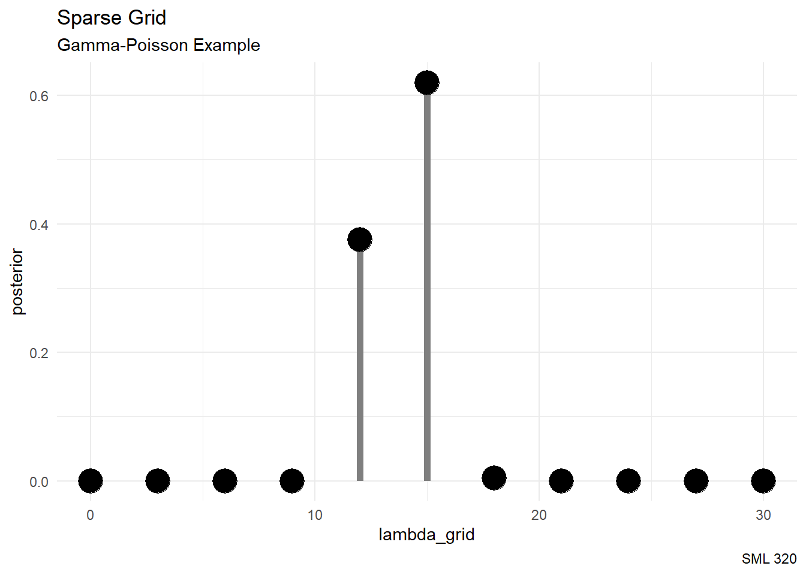
# Plot the grid approximated posterior
ggplot(grid_data, aes(x = lambda_grid, y = posterior)) +
geom_segment(aes(x = lambda_grid, xend = lambda_grid, y = 0, yend = posterior),
color = "gray50",
linewidth = 2) +
geom_point(size = 7) +
labs(title = "Sparse Grid",
subtitle = "Gamma-Poisson Example",
caption = "SML 320") +
theme_minimal()# Step 4: sample from the discretized posterior
posterior_sample <- sample_n(grid_data,
size = 10000,
weight = posterior,
replace = TRUE)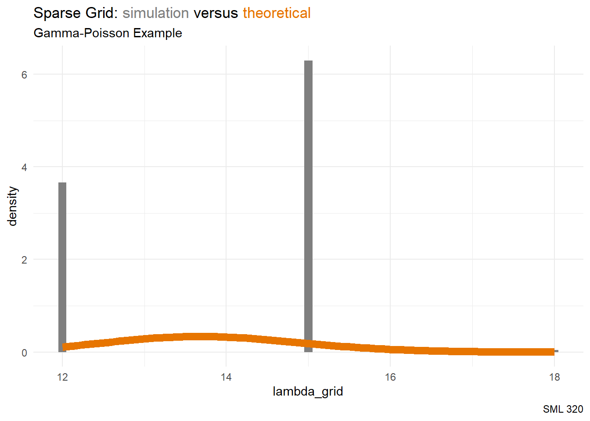
ggplot(posterior_sample, aes(x = pi_grid)) +
geom_histogram(aes(y = after_stat(density)),
binwidth = 0.1,
fill = "gray50") +
stat_function(fun = dbeta, args = list(7, 8),
color = "#E77500", linewidth = 3) +
lims(x = c(0, 1)) +
labs(title = "Sparse Grid: <span style='color:#7F7F7F'>simulation</span> versus <span style='color:#E77500'>theoretical</span>",
subtitle = "Gamma-Poisson Example",
caption = "SML 320") +
theme_minimal() +
theme(plot.title = element_markdown())Dense Grid
Here we will try this grid approximation idea over \(N = 501\) values
\[\lambda \in [0, 30]\]
obs_counts <- c(18, 14, 23, 22, 12, 22, 7, 0, 1)
# Step 1: Define a grid of 11 pi values
grid_data <- data.frame(lambda_grid = seq(from = 0, to = 30,
length = 501))
# Step 2: Evaluate the prior & likelihood at each pi
grid_data <- grid_data %>%
mutate(prior = dgamma(lambda_grid, 16, 0.8),
likelihood = dpois(18, lambda_grid)*
dpois(14, lambda_grid)*
dpois(23, lambda_grid)*
dpois(22, lambda_grid)*
dpois(12, lambda_grid)*
dpois(22, lambda_grid)*
dpois(7, lambda_grid)*
dpois(0, lambda_grid)*
dpois(1, lambda_grid))
# Step 3: Approximate the posterior
grid_data <- grid_data %>%
mutate(unnormalized = likelihood * prior,
posterior = unnormalized / sum(unnormalized))round(grid_data, 4) lambda_grid prior likelihood unnormalized posterior
1 0.00 0.0000 0 0 0.0000
2 0.06 0.0000 0 0 0.0000
3 0.12 0.0000 0 0 0.0000
4 0.18 0.0000 0 0 0.0000
5 0.24 0.0000 0 0 0.0000
6 0.30 0.0000 0 0 0.0000
7 0.36 0.0000 0 0 0.0000
8 0.42 0.0000 0 0 0.0000
9 0.48 0.0000 0 0 0.0000
10 0.54 0.0000 0 0 0.0000
11 0.60 0.0000 0 0 0.0000
12 0.66 0.0000 0 0 0.0000
13 0.72 0.0000 0 0 0.0000
14 0.78 0.0000 0 0 0.0000
15 0.84 0.0000 0 0 0.0000
16 0.90 0.0000 0 0 0.0000
17 0.96 0.0000 0 0 0.0000
18 1.02 0.0000 0 0 0.0000
19 1.08 0.0000 0 0 0.0000
20 1.14 0.0000 0 0 0.0000
21 1.20 0.0000 0 0 0.0000
22 1.26 0.0000 0 0 0.0000
23 1.32 0.0000 0 0 0.0000
24 1.38 0.0000 0 0 0.0000
25 1.44 0.0000 0 0 0.0000
26 1.50 0.0000 0 0 0.0000
27 1.56 0.0000 0 0 0.0000
28 1.62 0.0000 0 0 0.0000
29 1.68 0.0000 0 0 0.0000
30 1.74 0.0000 0 0 0.0000
31 1.80 0.0000 0 0 0.0000
32 1.86 0.0000 0 0 0.0000
33 1.92 0.0000 0 0 0.0000
34 1.98 0.0000 0 0 0.0000
35 2.04 0.0000 0 0 0.0000
36 2.10 0.0000 0 0 0.0000
37 2.16 0.0000 0 0 0.0000
38 2.22 0.0000 0 0 0.0000
39 2.28 0.0000 0 0 0.0000
40 2.34 0.0000 0 0 0.0000
41 2.40 0.0000 0 0 0.0000
42 2.46 0.0000 0 0 0.0000
43 2.52 0.0000 0 0 0.0000
44 2.58 0.0000 0 0 0.0000
45 2.64 0.0000 0 0 0.0000
46 2.70 0.0000 0 0 0.0000
47 2.76 0.0000 0 0 0.0000
48 2.82 0.0000 0 0 0.0000
49 2.88 0.0000 0 0 0.0000
50 2.94 0.0000 0 0 0.0000
51 3.00 0.0000 0 0 0.0000
52 3.06 0.0000 0 0 0.0000
53 3.12 0.0000 0 0 0.0000
54 3.18 0.0000 0 0 0.0000
55 3.24 0.0000 0 0 0.0000
56 3.30 0.0000 0 0 0.0000
57 3.36 0.0000 0 0 0.0000
58 3.42 0.0000 0 0 0.0000
59 3.48 0.0000 0 0 0.0000
60 3.54 0.0000 0 0 0.0000
61 3.60 0.0000 0 0 0.0000
62 3.66 0.0000 0 0 0.0000
63 3.72 0.0000 0 0 0.0000
64 3.78 0.0000 0 0 0.0000
65 3.84 0.0000 0 0 0.0000
66 3.90 0.0000 0 0 0.0000
67 3.96 0.0000 0 0 0.0000
68 4.02 0.0000 0 0 0.0000
69 4.08 0.0000 0 0 0.0000
70 4.14 0.0000 0 0 0.0000
71 4.20 0.0000 0 0 0.0000
72 4.26 0.0000 0 0 0.0000
73 4.32 0.0000 0 0 0.0000
74 4.38 0.0000 0 0 0.0000
75 4.44 0.0000 0 0 0.0000
76 4.50 0.0000 0 0 0.0000
77 4.56 0.0000 0 0 0.0000
78 4.62 0.0000 0 0 0.0000
79 4.68 0.0000 0 0 0.0000
80 4.74 0.0000 0 0 0.0000
81 4.80 0.0000 0 0 0.0000
82 4.86 0.0000 0 0 0.0000
83 4.92 0.0000 0 0 0.0000
84 4.98 0.0000 0 0 0.0000
85 5.04 0.0000 0 0 0.0000
86 5.10 0.0000 0 0 0.0000
87 5.16 0.0000 0 0 0.0000
88 5.22 0.0000 0 0 0.0000
89 5.28 0.0000 0 0 0.0000
90 5.34 0.0000 0 0 0.0000
91 5.40 0.0000 0 0 0.0000
92 5.46 0.0000 0 0 0.0000
93 5.52 0.0000 0 0 0.0000
94 5.58 0.0000 0 0 0.0000
95 5.64 0.0000 0 0 0.0000
96 5.70 0.0000 0 0 0.0000
97 5.76 0.0001 0 0 0.0000
98 5.82 0.0001 0 0 0.0000
99 5.88 0.0001 0 0 0.0000
100 5.94 0.0001 0 0 0.0000
101 6.00 0.0001 0 0 0.0000
102 6.06 0.0001 0 0 0.0000
103 6.12 0.0001 0 0 0.0000
104 6.18 0.0001 0 0 0.0000
105 6.24 0.0001 0 0 0.0000
106 6.30 0.0001 0 0 0.0000
107 6.36 0.0001 0 0 0.0000
108 6.42 0.0002 0 0 0.0000
109 6.48 0.0002 0 0 0.0000
110 6.54 0.0002 0 0 0.0000
111 6.60 0.0002 0 0 0.0000
112 6.66 0.0002 0 0 0.0000
113 6.72 0.0003 0 0 0.0000
114 6.78 0.0003 0 0 0.0000
115 6.84 0.0003 0 0 0.0000
116 6.90 0.0003 0 0 0.0000
117 6.96 0.0004 0 0 0.0000
118 7.02 0.0004 0 0 0.0000
119 7.08 0.0004 0 0 0.0000
120 7.14 0.0005 0 0 0.0000
121 7.20 0.0005 0 0 0.0000
122 7.26 0.0005 0 0 0.0000
123 7.32 0.0006 0 0 0.0000
124 7.38 0.0006 0 0 0.0000
125 7.44 0.0007 0 0 0.0000
126 7.50 0.0007 0 0 0.0000
127 7.56 0.0008 0 0 0.0000
128 7.62 0.0008 0 0 0.0000
129 7.68 0.0009 0 0 0.0000
130 7.74 0.0009 0 0 0.0000
131 7.80 0.0010 0 0 0.0000
132 7.86 0.0011 0 0 0.0000
133 7.92 0.0012 0 0 0.0000
134 7.98 0.0012 0 0 0.0000
135 8.04 0.0013 0 0 0.0000
136 8.10 0.0014 0 0 0.0000
137 8.16 0.0015 0 0 0.0000
138 8.22 0.0016 0 0 0.0000
139 8.28 0.0017 0 0 0.0000
140 8.34 0.0018 0 0 0.0000
141 8.40 0.0019 0 0 0.0000
142 8.46 0.0020 0 0 0.0000
143 8.52 0.0021 0 0 0.0000
144 8.58 0.0023 0 0 0.0000
145 8.64 0.0024 0 0 0.0000
146 8.70 0.0025 0 0 0.0000
147 8.76 0.0027 0 0 0.0000
148 8.82 0.0028 0 0 0.0000
149 8.88 0.0030 0 0 0.0000
150 8.94 0.0031 0 0 0.0000
151 9.00 0.0033 0 0 0.0000
152 9.06 0.0035 0 0 0.0000
153 9.12 0.0037 0 0 0.0000
154 9.18 0.0039 0 0 0.0000
155 9.24 0.0041 0 0 0.0000
156 9.30 0.0043 0 0 0.0000
157 9.36 0.0045 0 0 0.0000
158 9.42 0.0047 0 0 0.0000
159 9.48 0.0049 0 0 0.0000
160 9.54 0.0051 0 0 0.0000
161 9.60 0.0054 0 0 0.0000
162 9.66 0.0056 0 0 0.0000
163 9.72 0.0059 0 0 0.0000
164 9.78 0.0062 0 0 0.0000
165 9.84 0.0064 0 0 0.0000
166 9.90 0.0067 0 0 0.0000
167 9.96 0.0070 0 0 0.0000
168 10.02 0.0073 0 0 0.0001
169 10.08 0.0076 0 0 0.0001
170 10.14 0.0080 0 0 0.0001
171 10.20 0.0083 0 0 0.0001
172 10.26 0.0086 0 0 0.0001
173 10.32 0.0090 0 0 0.0002
174 10.38 0.0093 0 0 0.0002
175 10.44 0.0097 0 0 0.0002
176 10.50 0.0101 0 0 0.0003
177 10.56 0.0104 0 0 0.0003
178 10.62 0.0108 0 0 0.0004
179 10.68 0.0112 0 0 0.0005
180 10.74 0.0117 0 0 0.0005
181 10.80 0.0121 0 0 0.0006
182 10.86 0.0125 0 0 0.0007
183 10.92 0.0130 0 0 0.0009
184 10.98 0.0134 0 0 0.0010
185 11.04 0.0139 0 0 0.0012
186 11.10 0.0143 0 0 0.0013
187 11.16 0.0148 0 0 0.0015
188 11.22 0.0153 0 0 0.0017
189 11.28 0.0158 0 0 0.0020
190 11.34 0.0163 0 0 0.0022
191 11.40 0.0168 0 0 0.0025
192 11.46 0.0173 0 0 0.0028
193 11.52 0.0179 0 0 0.0032
194 11.58 0.0184 0 0 0.0035
195 11.64 0.0190 0 0 0.0039
196 11.70 0.0195 0 0 0.0043
197 11.76 0.0201 0 0 0.0048
198 11.82 0.0207 0 0 0.0052
199 11.88 0.0213 0 0 0.0057
200 11.94 0.0219 0 0 0.0062
201 12.00 0.0225 0 0 0.0068
202 12.06 0.0231 0 0 0.0074
203 12.12 0.0237 0 0 0.0079
204 12.18 0.0243 0 0 0.0085
205 12.24 0.0249 0 0 0.0092
206 12.30 0.0256 0 0 0.0098
207 12.36 0.0262 0 0 0.0105
208 12.42 0.0269 0 0 0.0111
209 12.48 0.0276 0 0 0.0118
210 12.54 0.0282 0 0 0.0124
211 12.60 0.0289 0 0 0.0131
212 12.66 0.0296 0 0 0.0137
213 12.72 0.0303 0 0 0.0144
214 12.78 0.0310 0 0 0.0150
215 12.84 0.0316 0 0 0.0156
216 12.90 0.0323 0 0 0.0162
217 12.96 0.0331 0 0 0.0168
218 13.02 0.0338 0 0 0.0173
219 13.08 0.0345 0 0 0.0178
220 13.14 0.0352 0 0 0.0182
221 13.20 0.0359 0 0 0.0187
222 13.26 0.0367 0 0 0.0190
223 13.32 0.0374 0 0 0.0193
224 13.38 0.0381 0 0 0.0196
225 13.44 0.0389 0 0 0.0199
226 13.50 0.0396 0 0 0.0200
227 13.56 0.0403 0 0 0.0202
228 13.62 0.0411 0 0 0.0202
229 13.68 0.0418 0 0 0.0203
230 13.74 0.0426 0 0 0.0202
231 13.80 0.0433 0 0 0.0201
232 13.86 0.0440 0 0 0.0200
233 13.92 0.0448 0 0 0.0198
234 13.98 0.0455 0 0 0.0196
235 14.04 0.0463 0 0 0.0193
236 14.10 0.0470 0 0 0.0190
237 14.16 0.0478 0 0 0.0186
238 14.22 0.0485 0 0 0.0182
239 14.28 0.0493 0 0 0.0178
240 14.34 0.0500 0 0 0.0174
241 14.40 0.0507 0 0 0.0169
242 14.46 0.0515 0 0 0.0164
243 14.52 0.0522 0 0 0.0158
244 14.58 0.0529 0 0 0.0153
245 14.64 0.0537 0 0 0.0147
246 14.70 0.0544 0 0 0.0141
247 14.76 0.0551 0 0 0.0135
248 14.82 0.0558 0 0 0.0130
249 14.88 0.0565 0 0 0.0124
250 14.94 0.0572 0 0 0.0118
251 15.00 0.0579 0 0 0.0112
252 15.06 0.0586 0 0 0.0106
253 15.12 0.0593 0 0 0.0100
254 15.18 0.0600 0 0 0.0095
255 15.24 0.0606 0 0 0.0089
256 15.30 0.0613 0 0 0.0084
257 15.36 0.0620 0 0 0.0079
258 15.42 0.0626 0 0 0.0074
259 15.48 0.0633 0 0 0.0069
260 15.54 0.0639 0 0 0.0064
261 15.60 0.0645 0 0 0.0060
262 15.66 0.0652 0 0 0.0056
263 15.72 0.0658 0 0 0.0052
264 15.78 0.0664 0 0 0.0048
265 15.84 0.0670 0 0 0.0044
266 15.90 0.0676 0 0 0.0041
267 15.96 0.0681 0 0 0.0037
268 16.02 0.0687 0 0 0.0034
269 16.08 0.0693 0 0 0.0032
270 16.14 0.0698 0 0 0.0029
271 16.20 0.0703 0 0 0.0026
272 16.26 0.0709 0 0 0.0024
273 16.32 0.0714 0 0 0.0022
274 16.38 0.0719 0 0 0.0020
275 16.44 0.0724 0 0 0.0018
276 16.50 0.0729 0 0 0.0016
277 16.56 0.0733 0 0 0.0015
278 16.62 0.0738 0 0 0.0013
279 16.68 0.0742 0 0 0.0012
280 16.74 0.0747 0 0 0.0011
281 16.80 0.0751 0 0 0.0010
282 16.86 0.0755 0 0 0.0009
283 16.92 0.0759 0 0 0.0008
284 16.98 0.0763 0 0 0.0007
285 17.04 0.0767 0 0 0.0006
286 17.10 0.0770 0 0 0.0005
287 17.16 0.0774 0 0 0.0005
288 17.22 0.0777 0 0 0.0004
289 17.28 0.0781 0 0 0.0004
290 17.34 0.0784 0 0 0.0003
291 17.40 0.0787 0 0 0.0003
292 17.46 0.0790 0 0 0.0003
293 17.52 0.0792 0 0 0.0002
294 17.58 0.0795 0 0 0.0002
295 17.64 0.0797 0 0 0.0002
296 17.70 0.0800 0 0 0.0002
297 17.76 0.0802 0 0 0.0001
298 17.82 0.0804 0 0 0.0001
299 17.88 0.0806 0 0 0.0001
300 17.94 0.0808 0 0 0.0001
301 18.00 0.0809 0 0 0.0001
302 18.06 0.0811 0 0 0.0001
303 18.12 0.0812 0 0 0.0001
304 18.18 0.0814 0 0 0.0001
305 18.24 0.0815 0 0 0.0000
306 18.30 0.0816 0 0 0.0000
307 18.36 0.0817 0 0 0.0000
308 18.42 0.0818 0 0 0.0000
309 18.48 0.0818 0 0 0.0000
310 18.54 0.0819 0 0 0.0000
311 18.60 0.0819 0 0 0.0000
312 18.66 0.0819 0 0 0.0000
313 18.72 0.0819 0 0 0.0000
314 18.78 0.0819 0 0 0.0000
315 18.84 0.0819 0 0 0.0000
316 18.90 0.0819 0 0 0.0000
317 18.96 0.0819 0 0 0.0000
318 19.02 0.0818 0 0 0.0000
319 19.08 0.0818 0 0 0.0000
320 19.14 0.0817 0 0 0.0000
321 19.20 0.0816 0 0 0.0000
322 19.26 0.0815 0 0 0.0000
323 19.32 0.0814 0 0 0.0000
324 19.38 0.0813 0 0 0.0000
325 19.44 0.0811 0 0 0.0000
326 19.50 0.0810 0 0 0.0000
327 19.56 0.0808 0 0 0.0000
328 19.62 0.0807 0 0 0.0000
329 19.68 0.0805 0 0 0.0000
330 19.74 0.0803 0 0 0.0000
331 19.80 0.0801 0 0 0.0000
332 19.86 0.0799 0 0 0.0000
333 19.92 0.0797 0 0 0.0000
334 19.98 0.0795 0 0 0.0000
335 20.04 0.0792 0 0 0.0000
336 20.10 0.0790 0 0 0.0000
337 20.16 0.0787 0 0 0.0000
338 20.22 0.0784 0 0 0.0000
339 20.28 0.0782 0 0 0.0000
340 20.34 0.0779 0 0 0.0000
341 20.40 0.0776 0 0 0.0000
342 20.46 0.0773 0 0 0.0000
343 20.52 0.0770 0 0 0.0000
344 20.58 0.0766 0 0 0.0000
345 20.64 0.0763 0 0 0.0000
346 20.70 0.0760 0 0 0.0000
347 20.76 0.0756 0 0 0.0000
348 20.82 0.0753 0 0 0.0000
349 20.88 0.0749 0 0 0.0000
350 20.94 0.0745 0 0 0.0000
351 21.00 0.0741 0 0 0.0000
352 21.06 0.0738 0 0 0.0000
353 21.12 0.0734 0 0 0.0000
354 21.18 0.0730 0 0 0.0000
355 21.24 0.0726 0 0 0.0000
356 21.30 0.0722 0 0 0.0000
357 21.36 0.0717 0 0 0.0000
358 21.42 0.0713 0 0 0.0000
359 21.48 0.0709 0 0 0.0000
360 21.54 0.0704 0 0 0.0000
361 21.60 0.0700 0 0 0.0000
362 21.66 0.0696 0 0 0.0000
363 21.72 0.0691 0 0 0.0000
364 21.78 0.0687 0 0 0.0000
365 21.84 0.0682 0 0 0.0000
366 21.90 0.0677 0 0 0.0000
367 21.96 0.0673 0 0 0.0000
368 22.02 0.0668 0 0 0.0000
369 22.08 0.0663 0 0 0.0000
370 22.14 0.0658 0 0 0.0000
371 22.20 0.0653 0 0 0.0000
372 22.26 0.0648 0 0 0.0000
373 22.32 0.0644 0 0 0.0000
374 22.38 0.0639 0 0 0.0000
375 22.44 0.0634 0 0 0.0000
376 22.50 0.0629 0 0 0.0000
377 22.56 0.0624 0 0 0.0000
378 22.62 0.0618 0 0 0.0000
379 22.68 0.0613 0 0 0.0000
380 22.74 0.0608 0 0 0.0000
381 22.80 0.0603 0 0 0.0000
382 22.86 0.0598 0 0 0.0000
383 22.92 0.0593 0 0 0.0000
384 22.98 0.0588 0 0 0.0000
385 23.04 0.0582 0 0 0.0000
386 23.10 0.0577 0 0 0.0000
387 23.16 0.0572 0 0 0.0000
388 23.22 0.0567 0 0 0.0000
389 23.28 0.0562 0 0 0.0000
390 23.34 0.0556 0 0 0.0000
391 23.40 0.0551 0 0 0.0000
392 23.46 0.0546 0 0 0.0000
393 23.52 0.0541 0 0 0.0000
394 23.58 0.0535 0 0 0.0000
395 23.64 0.0530 0 0 0.0000
396 23.70 0.0525 0 0 0.0000
397 23.76 0.0519 0 0 0.0000
398 23.82 0.0514 0 0 0.0000
399 23.88 0.0509 0 0 0.0000
400 23.94 0.0504 0 0 0.0000
401 24.00 0.0498 0 0 0.0000
402 24.06 0.0493 0 0 0.0000
403 24.12 0.0488 0 0 0.0000
404 24.18 0.0483 0 0 0.0000
405 24.24 0.0478 0 0 0.0000
406 24.30 0.0472 0 0 0.0000
407 24.36 0.0467 0 0 0.0000
408 24.42 0.0462 0 0 0.0000
409 24.48 0.0457 0 0 0.0000
410 24.54 0.0452 0 0 0.0000
411 24.60 0.0447 0 0 0.0000
412 24.66 0.0442 0 0 0.0000
413 24.72 0.0437 0 0 0.0000
414 24.78 0.0432 0 0 0.0000
415 24.84 0.0426 0 0 0.0000
416 24.90 0.0421 0 0 0.0000
417 24.96 0.0417 0 0 0.0000
418 25.02 0.0412 0 0 0.0000
419 25.08 0.0407 0 0 0.0000
420 25.14 0.0402 0 0 0.0000
421 25.20 0.0397 0 0 0.0000
422 25.26 0.0392 0 0 0.0000
423 25.32 0.0387 0 0 0.0000
424 25.38 0.0382 0 0 0.0000
425 25.44 0.0378 0 0 0.0000
426 25.50 0.0373 0 0 0.0000
427 25.56 0.0368 0 0 0.0000
428 25.62 0.0363 0 0 0.0000
429 25.68 0.0359 0 0 0.0000
430 25.74 0.0354 0 0 0.0000
431 25.80 0.0349 0 0 0.0000
432 25.86 0.0345 0 0 0.0000
433 25.92 0.0340 0 0 0.0000
434 25.98 0.0336 0 0 0.0000
435 26.04 0.0331 0 0 0.0000
436 26.10 0.0327 0 0 0.0000
437 26.16 0.0323 0 0 0.0000
438 26.22 0.0318 0 0 0.0000
439 26.28 0.0314 0 0 0.0000
440 26.34 0.0310 0 0 0.0000
441 26.40 0.0305 0 0 0.0000
442 26.46 0.0301 0 0 0.0000
443 26.52 0.0297 0 0 0.0000
444 26.58 0.0293 0 0 0.0000
445 26.64 0.0289 0 0 0.0000
446 26.70 0.0284 0 0 0.0000
447 26.76 0.0280 0 0 0.0000
448 26.82 0.0276 0 0 0.0000
449 26.88 0.0272 0 0 0.0000
450 26.94 0.0269 0 0 0.0000
451 27.00 0.0265 0 0 0.0000
452 27.06 0.0261 0 0 0.0000
453 27.12 0.0257 0 0 0.0000
454 27.18 0.0253 0 0 0.0000
455 27.24 0.0249 0 0 0.0000
456 27.30 0.0246 0 0 0.0000
457 27.36 0.0242 0 0 0.0000
458 27.42 0.0238 0 0 0.0000
459 27.48 0.0235 0 0 0.0000
460 27.54 0.0231 0 0 0.0000
461 27.60 0.0228 0 0 0.0000
462 27.66 0.0224 0 0 0.0000
463 27.72 0.0221 0 0 0.0000
464 27.78 0.0217 0 0 0.0000
465 27.84 0.0214 0 0 0.0000
466 27.90 0.0211 0 0 0.0000
467 27.96 0.0207 0 0 0.0000
468 28.02 0.0204 0 0 0.0000
469 28.08 0.0201 0 0 0.0000
470 28.14 0.0198 0 0 0.0000
471 28.20 0.0195 0 0 0.0000
472 28.26 0.0191 0 0 0.0000
473 28.32 0.0188 0 0 0.0000
474 28.38 0.0185 0 0 0.0000
475 28.44 0.0182 0 0 0.0000
476 28.50 0.0179 0 0 0.0000
477 28.56 0.0176 0 0 0.0000
478 28.62 0.0174 0 0 0.0000
479 28.68 0.0171 0 0 0.0000
480 28.74 0.0168 0 0 0.0000
481 28.80 0.0165 0 0 0.0000
482 28.86 0.0162 0 0 0.0000
483 28.92 0.0160 0 0 0.0000
484 28.98 0.0157 0 0 0.0000
485 29.04 0.0154 0 0 0.0000
486 29.10 0.0152 0 0 0.0000
487 29.16 0.0149 0 0 0.0000
488 29.22 0.0147 0 0 0.0000
489 29.28 0.0144 0 0 0.0000
490 29.34 0.0142 0 0 0.0000
491 29.40 0.0139 0 0 0.0000
492 29.46 0.0137 0 0 0.0000
493 29.52 0.0134 0 0 0.0000
494 29.58 0.0132 0 0 0.0000
495 29.64 0.0130 0 0 0.0000
496 29.70 0.0127 0 0 0.0000
497 29.76 0.0125 0 0 0.0000
498 29.82 0.0123 0 0 0.0000
499 29.88 0.0121 0 0 0.0000
500 29.94 0.0119 0 0 0.0000
501 30.00 0.0117 0 0 0.0000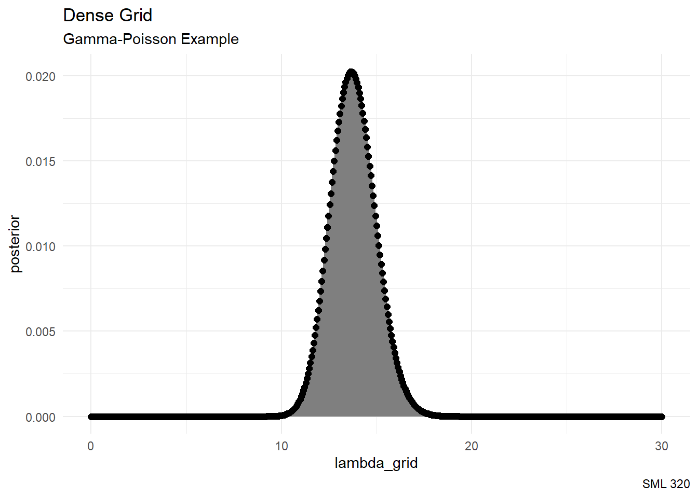
# Plot the grid approximated posterior
ggplot(grid_data, aes(x = lambda_grid, y = posterior)) +
geom_segment(aes(x = lambda_grid, xend = lambda_grid, y = 0, yend = posterior),
color = "gray50",
linewidth = 1) +
geom_point(size = 2) +
labs(title = "Dense Grid",
subtitle = "Gamma-Poisson Example",
caption = "SML 320") +
theme_minimal()# Step 4: sample from the discretized posterior
posterior_sample <- sample_n(grid_data,
size = 10000,
weight = posterior,
replace = TRUE)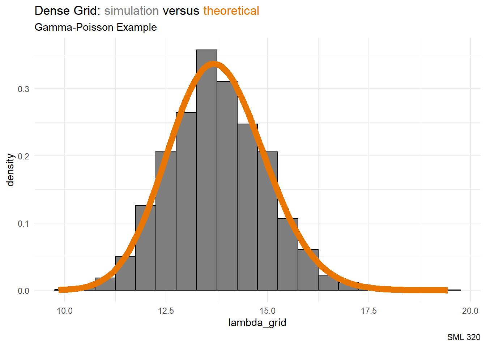
ggplot(posterior_sample, aes(x = pi_grid)) +
geom_histogram(aes(y = after_stat(density)),
binwidth = 0.5,
color = "black",
fill = "gray50") +
stat_function(fun = dgamma, args = list(135, 9.8),
color = "#E77500", linewidth = 3) +
lims(x = c(0, 1)) +
labs(title = "Dense Grid: <span style='color:#7F7F7F'>simulation</span> versus <span style='color:#E77500'>theoretical</span>",
subtitle = "Gamma-Poisson Example",
caption = "SML 320") +
theme_minimal() +
theme(plot.title = element_markdown())Limitations
- Handling larger data sets
- Handling multiple parameters
\[\vec{\theta} = (\theta_{1}, \theta_{2}, ..., \theta_{k})\]
Curse of dimensionality: As the number of variables increases, “the volume of the space increases so fast that the available data become sparse. In order to obtain a reliable result, the amount of data needed often grows exponentially with the dimensionality” — Wikipedia
- Beta-Binomial example: \(N = 101\) grid points
- Gamma-Poisson example: \(N = 501\) grid points
MCMC
Andrey Markov
- 1868 - 1908
- Russian Mathematician
- known for stochastic processes
- thesis supervisor of Georgy Voronoi

Stanislaw Ulam
- 1909 - 1984
- Polish Mathematician
- known for Monte Carlo methods
- indefinite appointment at IAS
- image source: Institute for Advanced Study
MCMC Chains
Let \(\{ \theta^{(1)}, \theta^{(2)}, ..., \theta^{(N)} \}\) be an MCMC chain (Markov Chain Monte Carlo).
- Markov Property:
\[f\left( \theta^{(i+1)} \bigg| \theta^{(1)}, \theta^{(2)}, ..., \theta^{(i)}, y \right) = f\left( \theta^{(i+1)} \bigg| \theta^{(i)}, y \right)\]
- MCMC simulation produces a chain of \(N\) dependent values
- These values are not drawn from the posterior pdf \(f(\theta|y)\)
Stan
Example: Beta-Binomial
Scenario: Smokers in Restaurants
Let us start with a vague beta prior, use a binomial model to get the likelihood of \(y = 4\) smokers among \(n = 9\) customers, and then get a beta posterior.
\[\begin{array}{rrcl} \text{prior: } & \pi & \sim & \text{Beta}(3, 3) \\ \text{likelihood: } & Y|\pi & \sim & \text{Bin}(9, \pi) \\ \text{posterior: } & \pi|Y & \sim & \text{Beta}(7, 8) \\ \end{array}\]
# STEP 1: DEFINE the model
bb_model <- "
data {
int<lower = 0, upper = 9> Y;
}
parameters {
real<lower = 0, upper = 1> pi;
}
model {
Y ~ binomial(9, pi);
pi ~ beta(2, 2);
}
"start_time <- Sys.time()
# STEP 2: SIMULATE the posterior
bb_sim <- stan(model_code = bb_model, data = list(Y = 4),
chains = 4, iter = 5000*2, seed = 84735)
SAMPLING FOR MODEL 'anon_model' NOW (CHAIN 1).
Chain 1:
Chain 1: Gradient evaluation took 1.1e-05 seconds
Chain 1: 1000 transitions using 10 leapfrog steps per transition would take 0.11 seconds.
Chain 1: Adjust your expectations accordingly!
Chain 1:
Chain 1:
Chain 1: Iteration: 1 / 10000 [ 0%] (Warmup)
Chain 1: Iteration: 1000 / 10000 [ 10%] (Warmup)
Chain 1: Iteration: 2000 / 10000 [ 20%] (Warmup)
Chain 1: Iteration: 3000 / 10000 [ 30%] (Warmup)
Chain 1: Iteration: 4000 / 10000 [ 40%] (Warmup)
Chain 1: Iteration: 5000 / 10000 [ 50%] (Warmup)
Chain 1: Iteration: 5001 / 10000 [ 50%] (Sampling)
Chain 1: Iteration: 6000 / 10000 [ 60%] (Sampling)
Chain 1: Iteration: 7000 / 10000 [ 70%] (Sampling)
Chain 1: Iteration: 8000 / 10000 [ 80%] (Sampling)
Chain 1: Iteration: 9000 / 10000 [ 90%] (Sampling)
Chain 1: Iteration: 10000 / 10000 [100%] (Sampling)
Chain 1:
Chain 1: Elapsed Time: 0.028 seconds (Warm-up)
Chain 1: 0.029 seconds (Sampling)
Chain 1: 0.057 seconds (Total)
Chain 1:
SAMPLING FOR MODEL 'anon_model' NOW (CHAIN 2).
Chain 2:
Chain 2: Gradient evaluation took 2e-06 seconds
Chain 2: 1000 transitions using 10 leapfrog steps per transition would take 0.02 seconds.
Chain 2: Adjust your expectations accordingly!
Chain 2:
Chain 2:
Chain 2: Iteration: 1 / 10000 [ 0%] (Warmup)
Chain 2: Iteration: 1000 / 10000 [ 10%] (Warmup)
Chain 2: Iteration: 2000 / 10000 [ 20%] (Warmup)
Chain 2: Iteration: 3000 / 10000 [ 30%] (Warmup)
Chain 2: Iteration: 4000 / 10000 [ 40%] (Warmup)
Chain 2: Iteration: 5000 / 10000 [ 50%] (Warmup)
Chain 2: Iteration: 5001 / 10000 [ 50%] (Sampling)
Chain 2: Iteration: 6000 / 10000 [ 60%] (Sampling)
Chain 2: Iteration: 7000 / 10000 [ 70%] (Sampling)
Chain 2: Iteration: 8000 / 10000 [ 80%] (Sampling)
Chain 2: Iteration: 9000 / 10000 [ 90%] (Sampling)
Chain 2: Iteration: 10000 / 10000 [100%] (Sampling)
Chain 2:
Chain 2: Elapsed Time: 0.028 seconds (Warm-up)
Chain 2: 0.03 seconds (Sampling)
Chain 2: 0.058 seconds (Total)
Chain 2:
SAMPLING FOR MODEL 'anon_model' NOW (CHAIN 3).
Chain 3:
Chain 3: Gradient evaluation took 4e-06 seconds
Chain 3: 1000 transitions using 10 leapfrog steps per transition would take 0.04 seconds.
Chain 3: Adjust your expectations accordingly!
Chain 3:
Chain 3:
Chain 3: Iteration: 1 / 10000 [ 0%] (Warmup)
Chain 3: Iteration: 1000 / 10000 [ 10%] (Warmup)
Chain 3: Iteration: 2000 / 10000 [ 20%] (Warmup)
Chain 3: Iteration: 3000 / 10000 [ 30%] (Warmup)
Chain 3: Iteration: 4000 / 10000 [ 40%] (Warmup)
Chain 3: Iteration: 5000 / 10000 [ 50%] (Warmup)
Chain 3: Iteration: 5001 / 10000 [ 50%] (Sampling)
Chain 3: Iteration: 6000 / 10000 [ 60%] (Sampling)
Chain 3: Iteration: 7000 / 10000 [ 70%] (Sampling)
Chain 3: Iteration: 8000 / 10000 [ 80%] (Sampling)
Chain 3: Iteration: 9000 / 10000 [ 90%] (Sampling)
Chain 3: Iteration: 10000 / 10000 [100%] (Sampling)
Chain 3:
Chain 3: Elapsed Time: 0.027 seconds (Warm-up)
Chain 3: 0.029 seconds (Sampling)
Chain 3: 0.056 seconds (Total)
Chain 3:
SAMPLING FOR MODEL 'anon_model' NOW (CHAIN 4).
Chain 4:
Chain 4: Gradient evaluation took 9e-06 seconds
Chain 4: 1000 transitions using 10 leapfrog steps per transition would take 0.09 seconds.
Chain 4: Adjust your expectations accordingly!
Chain 4:
Chain 4:
Chain 4: Iteration: 1 / 10000 [ 0%] (Warmup)
Chain 4: Iteration: 1000 / 10000 [ 10%] (Warmup)
Chain 4: Iteration: 2000 / 10000 [ 20%] (Warmup)
Chain 4: Iteration: 3000 / 10000 [ 30%] (Warmup)
Chain 4: Iteration: 4000 / 10000 [ 40%] (Warmup)
Chain 4: Iteration: 5000 / 10000 [ 50%] (Warmup)
Chain 4: Iteration: 5001 / 10000 [ 50%] (Sampling)
Chain 4: Iteration: 6000 / 10000 [ 60%] (Sampling)
Chain 4: Iteration: 7000 / 10000 [ 70%] (Sampling)
Chain 4: Iteration: 8000 / 10000 [ 80%] (Sampling)
Chain 4: Iteration: 9000 / 10000 [ 90%] (Sampling)
Chain 4: Iteration: 10000 / 10000 [100%] (Sampling)
Chain 4:
Chain 4: Elapsed Time: 0.027 seconds (Warm-up)
Chain 4: 0.029 seconds (Sampling)
Chain 4: 0.056 seconds (Total)
Chain 4: end_time <- Sys.time()
print(round(end_time- start_time))Time difference of 38 secsbayesplot::mcmc_hist(bb_sim, pars = "pi")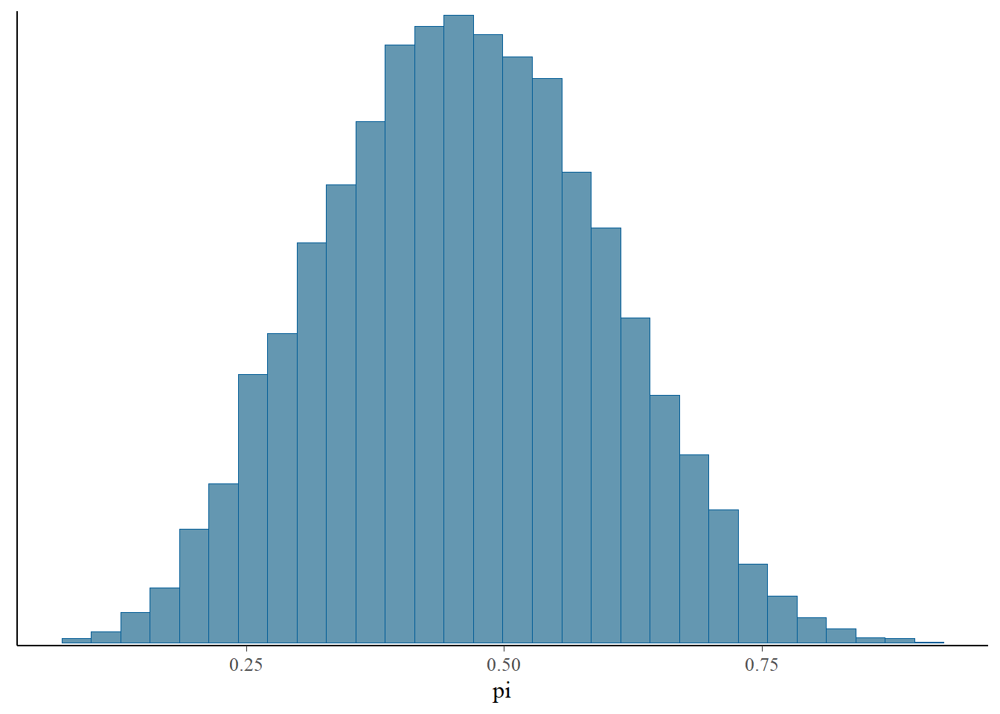
bayesplot::mcmc_dens(bb_sim, pars = "pi") +
stat_function(fun = dbeta, args = list(7, 8),
color = "#E77500", linewidth = 3) +
labs(title = "MCMC: <span style='color:#619CFF'>simulation</span> versus <span style='color:#E77500'>theoretical</span>",
subtitle = "Beta-Binomial Example",
caption = "SML 320") +
theme_minimal() +
theme(plot.title = element_markdown())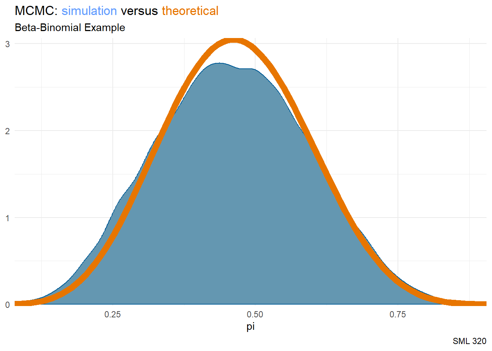
Example: Gamma-Poisson
Scenario: Drug Law Violations
Let us start with a vague Gamma prior, use a binomial model to get the likelihood of \(\sum y = 119\) drug law violations over \(n = 9\) years, and then get a Gamma posterior.
\[\begin{array}{rrcl} \text{prior: } & \pi & \sim & \text{Gamma}(16, 0.8) \\ \text{likelihood: } & Y|\pi & \sim & \text{Pois}(119/9) \\ \text{posterior: } & \pi|Y & \sim & \text{Gamma}(135, 9.8) \\ \end{array}\]
# STEP 1: DEFINE the model
gp_model <- "
data {
int<lower = 0> Y[9];
}
parameters {
real<lower = 0> lambda;
}
model {
Y ~ poisson(lambda);
lambda ~ gamma(16, 0.8);
}
"start_time <- Sys.time()
# STEP 2: SIMULATE the posterior
obs_counts <- c(18, 14, 23, 22, 12, 22, 7, 0, 1)
gp_sim <- stan(model_code = gp_model,
data = list(Y = obs_counts),
chains = 4, iter = 5000*2, seed = 84735)
SAMPLING FOR MODEL 'anon_model' NOW (CHAIN 1).
Chain 1:
Chain 1: Gradient evaluation took 1.6e-05 seconds
Chain 1: 1000 transitions using 10 leapfrog steps per transition would take 0.16 seconds.
Chain 1: Adjust your expectations accordingly!
Chain 1:
Chain 1:
Chain 1: Iteration: 1 / 10000 [ 0%] (Warmup)
Chain 1: Iteration: 1000 / 10000 [ 10%] (Warmup)
Chain 1: Iteration: 2000 / 10000 [ 20%] (Warmup)
Chain 1: Iteration: 3000 / 10000 [ 30%] (Warmup)
Chain 1: Iteration: 4000 / 10000 [ 40%] (Warmup)
Chain 1: Iteration: 5000 / 10000 [ 50%] (Warmup)
Chain 1: Iteration: 5001 / 10000 [ 50%] (Sampling)
Chain 1: Iteration: 6000 / 10000 [ 60%] (Sampling)
Chain 1: Iteration: 7000 / 10000 [ 70%] (Sampling)
Chain 1: Iteration: 8000 / 10000 [ 80%] (Sampling)
Chain 1: Iteration: 9000 / 10000 [ 90%] (Sampling)
Chain 1: Iteration: 10000 / 10000 [100%] (Sampling)
Chain 1:
Chain 1: Elapsed Time: 0.031 seconds (Warm-up)
Chain 1: 0.032 seconds (Sampling)
Chain 1: 0.063 seconds (Total)
Chain 1:
SAMPLING FOR MODEL 'anon_model' NOW (CHAIN 2).
Chain 2:
Chain 2: Gradient evaluation took 3e-06 seconds
Chain 2: 1000 transitions using 10 leapfrog steps per transition would take 0.03 seconds.
Chain 2: Adjust your expectations accordingly!
Chain 2:
Chain 2:
Chain 2: Iteration: 1 / 10000 [ 0%] (Warmup)
Chain 2: Iteration: 1000 / 10000 [ 10%] (Warmup)
Chain 2: Iteration: 2000 / 10000 [ 20%] (Warmup)
Chain 2: Iteration: 3000 / 10000 [ 30%] (Warmup)
Chain 2: Iteration: 4000 / 10000 [ 40%] (Warmup)
Chain 2: Iteration: 5000 / 10000 [ 50%] (Warmup)
Chain 2: Iteration: 5001 / 10000 [ 50%] (Sampling)
Chain 2: Iteration: 6000 / 10000 [ 60%] (Sampling)
Chain 2: Iteration: 7000 / 10000 [ 70%] (Sampling)
Chain 2: Iteration: 8000 / 10000 [ 80%] (Sampling)
Chain 2: Iteration: 9000 / 10000 [ 90%] (Sampling)
Chain 2: Iteration: 10000 / 10000 [100%] (Sampling)
Chain 2:
Chain 2: Elapsed Time: 0.038 seconds (Warm-up)
Chain 2: 0.028 seconds (Sampling)
Chain 2: 0.066 seconds (Total)
Chain 2:
SAMPLING FOR MODEL 'anon_model' NOW (CHAIN 3).
Chain 3:
Chain 3: Gradient evaluation took 2e-06 seconds
Chain 3: 1000 transitions using 10 leapfrog steps per transition would take 0.02 seconds.
Chain 3: Adjust your expectations accordingly!
Chain 3:
Chain 3:
Chain 3: Iteration: 1 / 10000 [ 0%] (Warmup)
Chain 3: Iteration: 1000 / 10000 [ 10%] (Warmup)
Chain 3: Iteration: 2000 / 10000 [ 20%] (Warmup)
Chain 3: Iteration: 3000 / 10000 [ 30%] (Warmup)
Chain 3: Iteration: 4000 / 10000 [ 40%] (Warmup)
Chain 3: Iteration: 5000 / 10000 [ 50%] (Warmup)
Chain 3: Iteration: 5001 / 10000 [ 50%] (Sampling)
Chain 3: Iteration: 6000 / 10000 [ 60%] (Sampling)
Chain 3: Iteration: 7000 / 10000 [ 70%] (Sampling)
Chain 3: Iteration: 8000 / 10000 [ 80%] (Sampling)
Chain 3: Iteration: 9000 / 10000 [ 90%] (Sampling)
Chain 3: Iteration: 10000 / 10000 [100%] (Sampling)
Chain 3:
Chain 3: Elapsed Time: 0.032 seconds (Warm-up)
Chain 3: 0.034 seconds (Sampling)
Chain 3: 0.066 seconds (Total)
Chain 3:
SAMPLING FOR MODEL 'anon_model' NOW (CHAIN 4).
Chain 4:
Chain 4: Gradient evaluation took 3e-06 seconds
Chain 4: 1000 transitions using 10 leapfrog steps per transition would take 0.03 seconds.
Chain 4: Adjust your expectations accordingly!
Chain 4:
Chain 4:
Chain 4: Iteration: 1 / 10000 [ 0%] (Warmup)
Chain 4: Iteration: 1000 / 10000 [ 10%] (Warmup)
Chain 4: Iteration: 2000 / 10000 [ 20%] (Warmup)
Chain 4: Iteration: 3000 / 10000 [ 30%] (Warmup)
Chain 4: Iteration: 4000 / 10000 [ 40%] (Warmup)
Chain 4: Iteration: 5000 / 10000 [ 50%] (Warmup)
Chain 4: Iteration: 5001 / 10000 [ 50%] (Sampling)
Chain 4: Iteration: 6000 / 10000 [ 60%] (Sampling)
Chain 4: Iteration: 7000 / 10000 [ 70%] (Sampling)
Chain 4: Iteration: 8000 / 10000 [ 80%] (Sampling)
Chain 4: Iteration: 9000 / 10000 [ 90%] (Sampling)
Chain 4: Iteration: 10000 / 10000 [100%] (Sampling)
Chain 4:
Chain 4: Elapsed Time: 0.034 seconds (Warm-up)
Chain 4: 0.028 seconds (Sampling)
Chain 4: 0.062 seconds (Total)
Chain 4: end_time <- Sys.time()
print(round(end_time- start_time))Time difference of 38 secsbayesplot::mcmc_hist(gp_sim, pars = "lambda")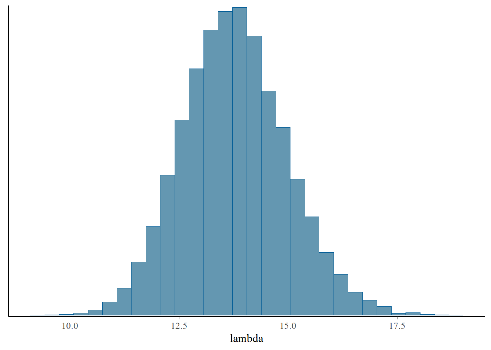
bayesplot::mcmc_dens(gp_sim, pars = "lambda") +
stat_function(fun = dgamma, args = list(135, 9.8),
color = "#E77500", linewidth = 3) +
labs(title = "MCMC: <span style='color:#619CFF'>simulation</span> versus <span style='color:#E77500'>theoretical</span>",
subtitle = "Gamma-Poisson Example",
caption = "SML 320") +
theme_minimal() +
theme(plot.title = element_markdown())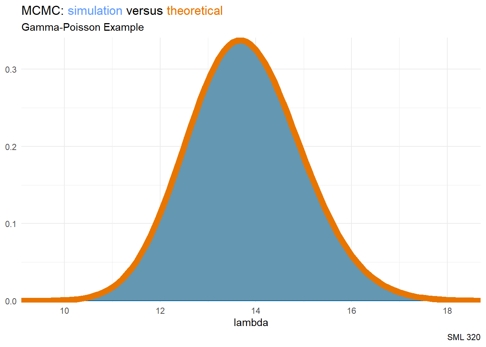
Quo Vadimus
# Trace plots of the 4 Markov chains
mcmc_trace(gp_sim, pars = "lambda", size = 0.1)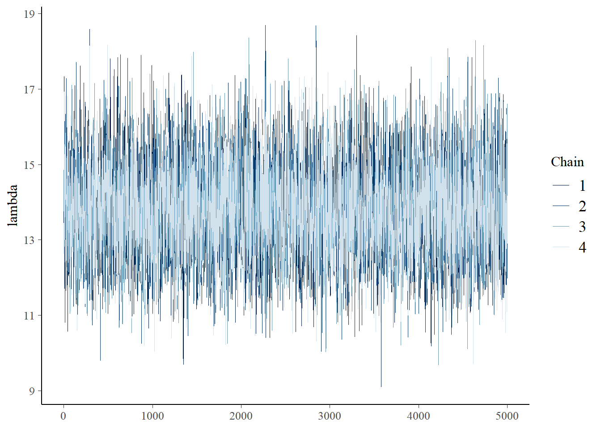
- How do we know if the MCMC calculations are complete?
- How do we know if the MCMC calculations are reliable?
- How does MCMC work in approximating the posterior distribution?
Footnotes
sessionInfo()R version 4.3.0 (2023-04-21 ucrt)
Platform: x86_64-w64-mingw32/x64 (64-bit)
Running under: Windows 10 x64 (build 19045)
Matrix products: default
locale:
[1] LC_COLLATE=English_United States.utf8
[2] LC_CTYPE=English_United States.utf8
[3] LC_MONETARY=English_United States.utf8
[4] LC_NUMERIC=C
[5] LC_TIME=English_United States.utf8
time zone: America/New_York
tzcode source: internal
attached base packages:
[1] stats graphics grDevices utils datasets methods base
other attached packages:
[1] lubridate_1.9.2 forcats_1.0.0 stringr_1.5.0 dplyr_1.1.3
[5] purrr_1.0.2 readr_2.1.4 tidyr_1.3.0 tibble_3.2.1
[9] ggplot2_3.4.3 tidyverse_2.0.0 rstan_2.32.5 StanHeaders_2.32.5
[13] ggtext_0.1.2 bayesplot_1.10.0
loaded via a namespace (and not attached):
[1] tensorA_0.36.2 gtable_0.3.4 xfun_0.40
[4] QuickJSR_1.1.3 htmlwidgets_1.6.2 processx_3.8.1
[7] inline_0.3.19 callr_3.7.3 tzdb_0.4.0
[10] vctrs_0.6.3 tools_4.3.0 ps_1.7.5
[13] generics_0.1.3 stats4_4.3.0 curl_5.0.2
[16] parallel_4.3.0 fansi_1.0.4 pkgconfig_2.0.3
[19] checkmate_2.2.0 distributional_0.3.2 RcppParallel_5.1.7
[22] lifecycle_1.0.4 compiler_4.3.0 farver_2.1.1
[25] munsell_0.5.0 codetools_0.2-19 htmltools_0.5.6
[28] yaml_2.3.7 pillar_1.9.0 crayon_1.5.2
[31] abind_1.4-5 posterior_1.4.1 commonmark_1.9.0
[34] tidyselect_1.2.0 digest_0.6.33 stringi_1.7.12
[37] reshape2_1.4.4 labeling_0.4.3 fastmap_1.1.1
[40] grid_4.3.0 colorspace_2.1-0 cli_3.6.1
[43] magrittr_2.0.3 loo_2.6.0 pkgbuild_1.4.0
[46] utf8_1.2.3 withr_2.5.2 backports_1.4.1
[49] prettyunits_1.1.1 scales_1.2.1 timechange_0.2.0
[52] rmarkdown_2.24 matrixStats_1.0.0 gridExtra_2.3
[55] hms_1.1.3 evaluate_0.21 knitr_1.43
[58] V8_4.3.0 markdown_1.8 rlang_1.1.1
[61] gridtext_0.1.5 Rcpp_1.0.11 glue_1.6.2
[64] xml2_1.3.5 rstudioapi_0.15.0 jsonlite_1.8.7
[67] plyr_1.8.8 R6_2.5.1